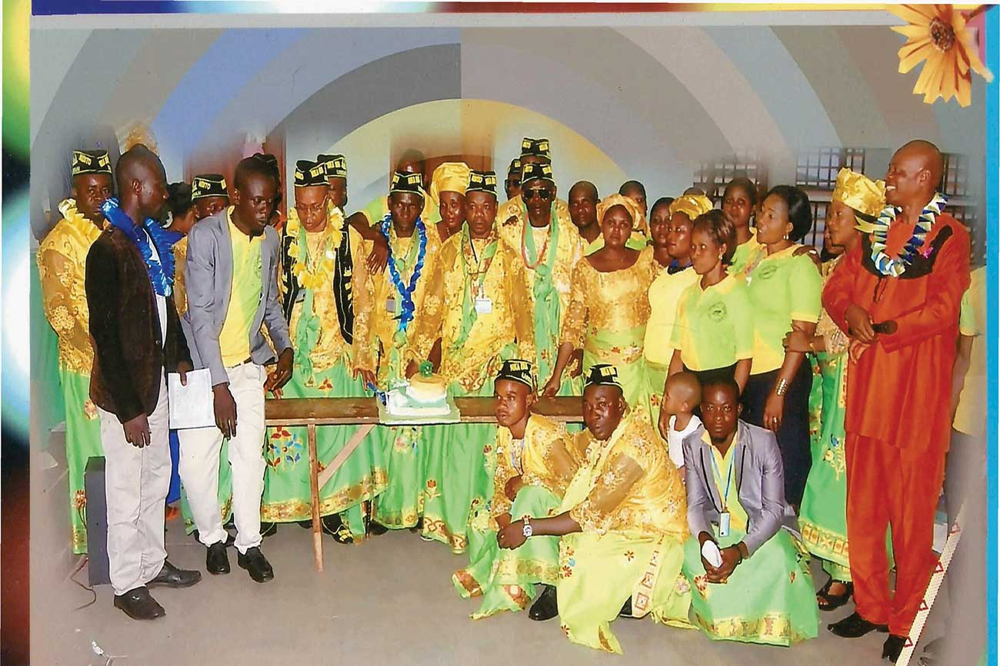
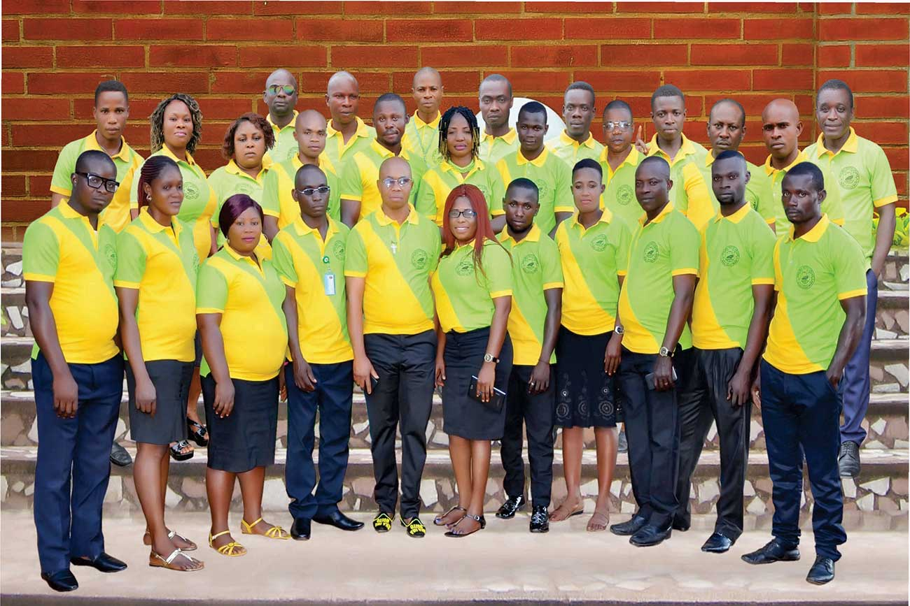

The union road map history of NKA IMA NDITO URUAN (NINU).Uruan Local Government Area of Akwa Ibom State, Nnewi Anambra state. Chapter has happened as a drop of water in most universe. When three better head became ONE; That is to say, the father, the son and the holy spirit- they all formed one God (trinity) Ironically the systematically story of history began in the year 1994, sept., 16th. There were three Wise Men Brothers, Mr. Umeh Akpan(Late) a staff of Jimex, Company Mr. Effiong Paulinus a staff Ibeto group of company and Mr Felix Effiong a staff of chartered aluminum company all these stated companies located at nnewi metropolis Anambra State. The above three wise men came from one particular community Ndon Ebom and also same street named Nkime- Nta street. It would sound so funny, to dick up to this point they love themselves despite all hurt of poor salaries received monthly then which is not necessary to disclose it here. .However, the three Wise men summon a symposium conference within themselves and came out with a very revolutionary idea to established a family meeting (union) and to name it after our beloved community Ndon Ebom which vital aims are to foster; Unity, peace, Progress etc. among us living in a strength land. Here a name was suggested “NKA IMA NDITO NDOM EBOM (NINNE)” Nnewi. The three wise men unveiled the said motivated idea to all sons and daughters of the soil. Very few indigenous people bought these three wise men idea while others saw it as a taboo or unimportant to them. Be that as it may, those who understood the significant means of integrated accepted the idea and instance inauguration took place, under listed names below form the First Executed Board of Nka Ima Ndito Ndon Ebom: Mr. Felix Effiong – President/V. President Mr. Effiong Paulinus- Secretary Gen/ Assist. Mr. Umeh Akpan(Late)- Treasurer. Mr. Ephraim Edet- Financial Secretary Mr. Linus Bassey- Assistant Financial Sec. Mr. Ubeh Asugwo – Welfare Officer. Mr. Francis Akpan- Provost Madam Cornelia P. Effiong- Woman Adviser. Engr. Gabriel Essien- Ground Patron Engr. Esu Udoh- Adviser.

At this junction the first president of the group goes to one of the three wise men, Mr. Felix Effiong, in his govt. he rules without form of actual tenure of office due to scanty number of memberships, but they see unity, peace and welfare of the members as supreme then. Nka Ima Ndito Ndon Ebom progress for years, membership improved an election was demanded by one third of the general house which was won by the second wise men Mr. Effiong Paulinus, able president turbulently changes the affairs of the union. He formulated some bye-laws, introduces two years single tenure of office, brought in two nearby communities comprises of Ekpene-Ukim and Ituk Mbang to join the union because of nonchalant attitude of claims ownership members he has been stated to experience during his tenure. That was not enough; he called upon the following personalities and honored them with title (fathers) (Ete) in person of Engr. Gabriel Essien as Ete Eberedem Ndito Ndon Ebom; Engr. Esu Udoh – Ete Unwana; Chief Titus Effiong As Ete Ndito Uruan. They all awarded with certificate of recognition to become part and parcel of the union respectively. Still under Mr. Effiong Paulinus administration, union uniform call Ikpok-Ube and cultural; instrument was also been launched which we used it to display N’Ebom cultural dance in every union outing up till date. Having got enough space to states all his legacies, let draw a curtain to accumulate others achievers. In spirit of sportsmanship and fair justice, Late Mr Umeh Akpan trade- mark can’t be easily forgotten being the third wise man; government to reach his hand……, we lose him, such a great philanthropist, a peace maker. May his gentle soul rest in perfect peace. Amen in the year 2005, another election was conducted, Mr. Savour Edet. Carried the day; he did well, he was able to launch the 1st union constitution of Nka Ima Ndito Ndon Ebom in booklet, he also maintain welfare packages of the members. But his dark side was that, he refused to step down as his tenure expired. However the little deed of him, he later remember” Law spare no one” he finally dropped the mantle not to stain his reputation. History count itself here, as union rethink about immense contribution of the third Wiseman late Mr. Umeh Akpan has a saying that goes this way” Owo-isituke aban ikwa afan”. At this point of view, his bosom brother Mr. Vincent Akpan has to won election by vote of confidence to complete the three wise men life cycle without cheat. He experiences a lot of dilemma beyond his control.

Thinking way out, C.S.A. of the union secretly disclose to him alone and said, road map to India is ONLY SOLUTION. The incumbent president Mr. Vincent Akpan don’t even understood the full meaning of compass C.S.A. to be used trace the map till 2010 presidential welcome address which he officially and formally announced. : THE AMALGAMATION” of the entire Uruan Indigenes to come into one umbrella for purpose of identity and dignity he quotes. He further stood there and changed the union name from Nka Ima Ndito ndon Ebom(NINNE) to NKA IMA NDITO URUAN(NINU). At these marvelous and wonderful achievement, so far without questioning by members why? Made him to be joyfully beat chest like the happiest man on earth, of him to laid down such gigantic record as his footprint and left the office peacefully. In these circumstances, under the umbrella of Nka Ima Ndito Uruan, an election was conducted; line of contest was drown, at the end, Hon Mr. Raphael Bassey became victorious; which mark the post of 1st president of Nka Ima Ndito Uruan while Mr. Dominus Bassey became the 1st vice president which was handed over to him by a man of integrity, a visionary man, a man of substance, a man wherever he set target he can’t miss it, a man who believe in practical not theory, a man only his compass indicator trace out map of success. He is no other person than Chief Special Adviser Elder Effoing Paulinus (C.S.A) of the union. Other officers listed below form the 1st Executive Board of Nka Ima Ndito Uruan. Elder Effiong Paulinus- Chief Special Adviser C.S.A. Elder Vincent Akpan- Patron 111 Mr. Edem Nyong (Late)- Secretary General Mr. Ephraim Edet- Patron 1/Financial Secretary Mr. Anthony Edet- Spiritual Leader Mr. Ubeh Asugwo- Chief Welfare Mr. Lawerance Effing-Assist. Secretary Mr. Jackson Ndareke- Walfare Officer 1 Mr. Anthony Thompson Welfare Officer 11 Mr. Ndong Akpan –PRO Chief Felix D. Edet- Chist Auditor Madam, Deac, Cornelia P. Effing- Chief Adv. Women Affairs. Mrs. Cecilia E. Edet – Matron 1 Madam Lucy Umana –Treasurer. Some of the under listed official above lost their offices due to nonchalant attitude and poor performance. Hon Mr. Raphael Bassey and his vice Engr. Dominic bassey both won the seat back- to – back and took the bull by the horns to fight all the menace that linker for quite a long time in the union. For instance, discrimination, blasphemy words, drunkenness etc. He saw these as set back and hidden weapons existing in any given group hindering progress and development respectively. He made union universal for all uruan indigenes. He also used his veto power and convert all Nka Ima Ndito Ndin Ebom certificate holders and title fathers to Nka Ima Ndito Uruan. At the same vein he honored Chief Elder Uduak Samuel as Ext. Grand Patron, Mr. Uko Umana as Chief Adv. Social Affiars and mrs. Uko Umana as madam has awarded them certificated. Still in his regime, his target is to break his own record; accessing union score card today he is the only president that met union manifestos since in existence in 1994. Detail below account remarkable achievement of Mr. President Hon Raphael Bassey and his cabinet. - Registered union obtained certificate - Printing ID card, letter head, stamp etc - Amendments of the constitution - Launching of calendar 2017 - Yearly visit to orphanage homes - Launching of new look of union uniforms - Printing of union polo - Printing of union exercise books - Honored and awarded best members performance with gifts and certificate - Cutting of the 22nd year anniversary cake ever. - Sharing of gifts to members- Umbrellas, Buckets etc. - Registered union under AKWA IBOM community Anst - Introduces seminars to members and children - Launching of the union brochure and celebration of 25year jubilee UNION DARK DAYS: To God Be the Glory, since existence of the group….. It’s a pity we loss three good registered members- Mr. Umeh Akpan(late) one of the founder, Mr. Edem Nyong(late) and 1st lady Mrs. Grace R. Bassey. That was then, now god has taken absolute control of the union by his grace. We pray to god to grant them eternal rest in Jesus name, amen. CONCLUSION Uruan bravo! Uruan bravo!! Our back –to – back president winner, hon. Mr. Raphael bassey, his vice Mr. Dominic bassey and the entire cabinate members of Nka Ime Ndito Uruan joyfully felicitate with you on the celebration of 25yrs silver jubilee/ launching of union 1st edition brochure 2018. We wish her the golden jubilee celebration ahead in Jesus Name. Amen From president desk I use this medium and opportunity to thank god almighty for making it possible to acquire this great project. Despite our financial handicapped. I also thank and appreciate chief special adviser of this noble union elder Effiong Paulinus( C.S.A) of him create time narrate complete history of this group Nka Ima Ndito Uruan. It is a wonderful contribution, more grease to his elbow I also salute my immediate predecessor for being able to collaborate to make the dream come true. My dearest members, I love you all with you I stand, I still pleaded to continue supporting me properly these union flag to greater height which are wishes of every given leader to attain his goal. Remain bless. Elder Effiong Paulinus(C.S.A)